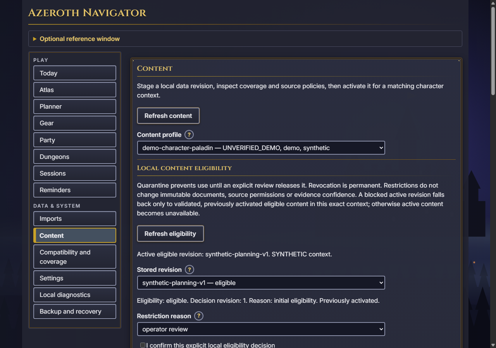
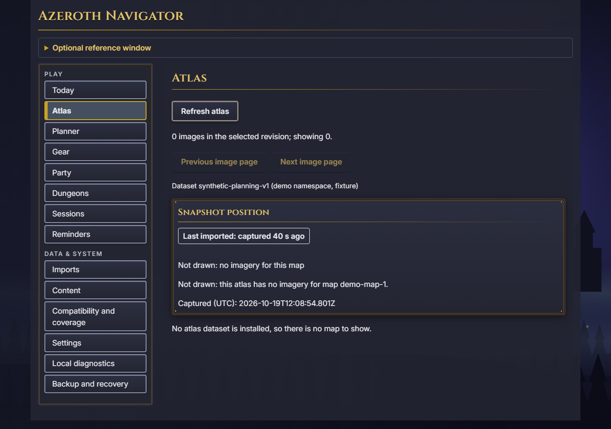

Planner & Atlas
Inspect planning requests, ordered routes and available map context. Dataset and edition boundaries remain explicit.
TOOLS & WORKFLOWS
The companion works from imported state. It preserves what is known, what is stale and what has not been established.
Inspect planning requests, ordered routes and available map context. Dataset and edition boundaries remain explicit.
Separate theoretical, obtainable and practical comparisons. Missing models and acquisition facts remain visible.
Compare participant progress and freshness; inspect manually recorded sessions with measured and unknown time kept distinct.
No verified playable-content catalog ships in this development release. Synthetic planning examples are demonstrations, not game guidance.
LOCAL RESEARCH
Local preparation supports cancellation, unchanged-source resume, explicit locale and resource choices, and revision-bound previews. Inspect provenance, compare research references and roll back a selection.
Cache, addon and guide inputs are bounded data. Imported Lua is never executed. Research references cannot authorize playable advice.
Manual snapshot capture, plan import and HUD controls, and manual session recording run inside the permitted addon environment. Desktop exchange uses files or pasted text. The desktop never represents imported state as a live view of the game.
Read the exact admitted builds →
